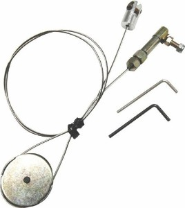
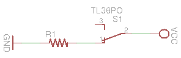

This is a fake entry for illustrative purposes only. V. Santos
Brief description
This description deals with a mechanism to actuate the brake
and clutch pedals on the Atlascar.
System operation
[Long description]
Uses comercial boxes driven by electrical signals from a PLC ... bla
bla
Mechanical components
[conceptual mechanism, Drawings of fixing and supporting systems...]
Pedals are pushed by a mechanical arrangement of cables and pulleys.

Electrical circuits
[Electrical circuits of the devices - use images to illustrate]
The main pedal actuator has the following wiring (Wrong, do not be
fooled... :-))

The boxes have internal microcontrollers to operate the system
Firmware and similar code
[Describe what programs and environments are used alogn with links to
relevant code]
Microcontroller board is PIC-based and has the following
main program: brake PIC code
Maintenance
[Here lay specific instructions for technitians and engineers]
The system requires calibration procedures each time the boxes are
moved.